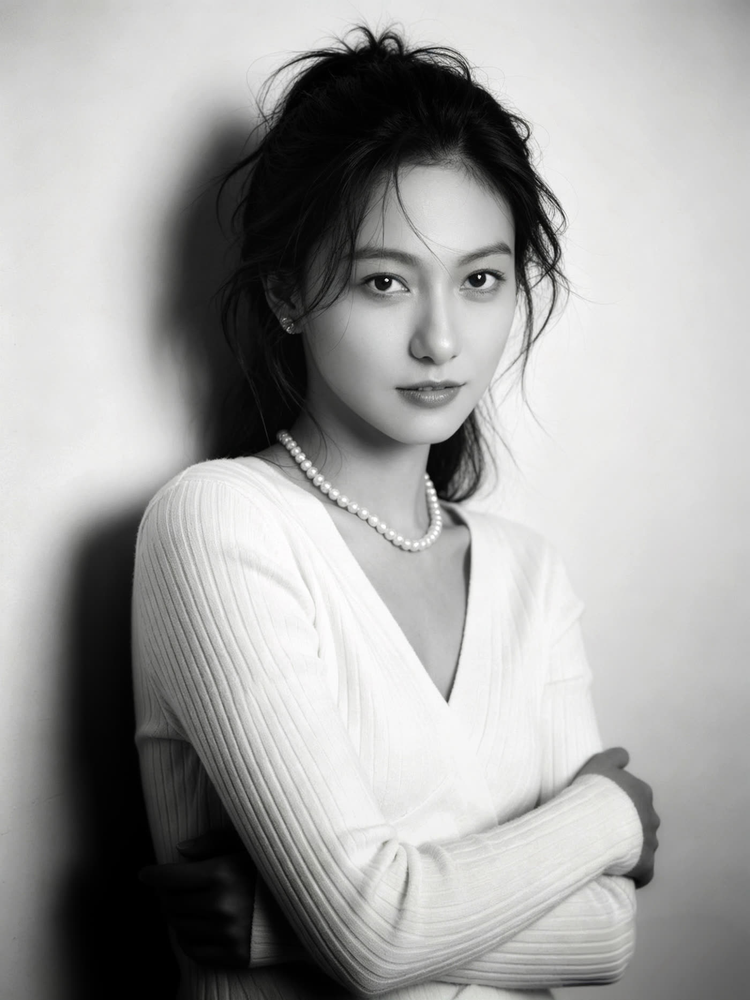

毕业于中国艺术研究院摄影与数字媒体方向。曾任职摩登天空杂志编辑、高校教师， 中国女摄影家协会会员，新华社 / 中国摄影网签约摄影师、特约记者。
长期关注中国城市更新与 80、90 代际创作者生存境况。2023—2026 年数十次往返雄安驻地创作， 完成《雄安 · 人 · 我》系列作品并在中国工艺美术馆展出。
在《中国摄影家》《人像摄影》等权威刊物发表数十万字艺术评论及摄影作品， 并出版《中国摄影网十佳摄影师专访》一书。
本研究探讨摄影作为「城市观看的媒介」，如何通过城市档案、新闻摄影、纪实摄影等多元形式， 客观记录并艺术化地表现雄安新区的城市化进程。
发表平台：中国知网 CNKI · 2025 年第 09 期 ｜ 指导教师：李树峰 教授 ｜ 学科专业：艺术设计 (MFA)
采访授权 · 专业采访证
核心创作 · 深度报道 · 特约记者
权威影像 · 国家级媒体合作认证